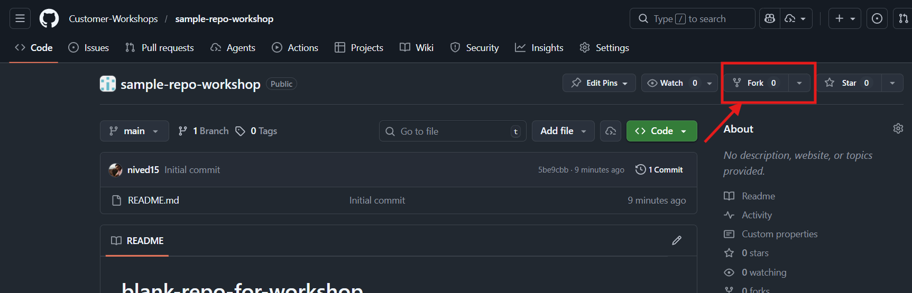
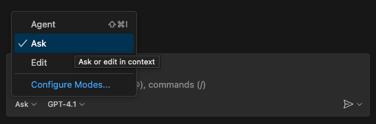
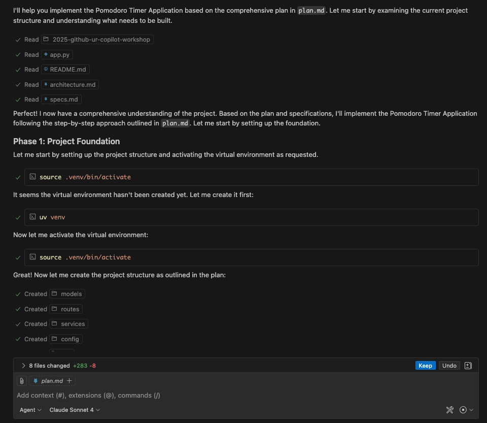
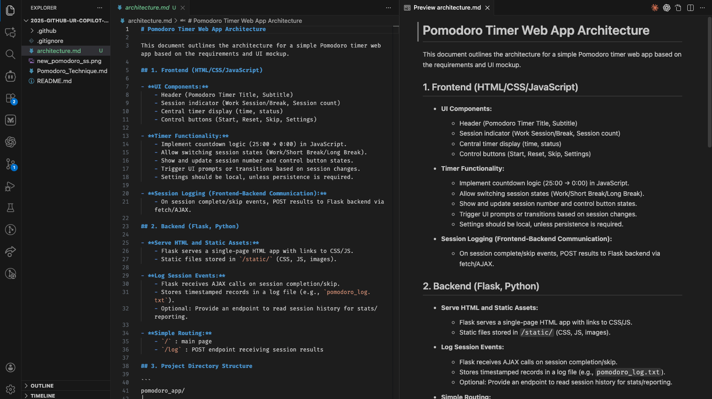
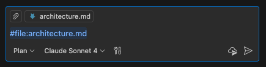
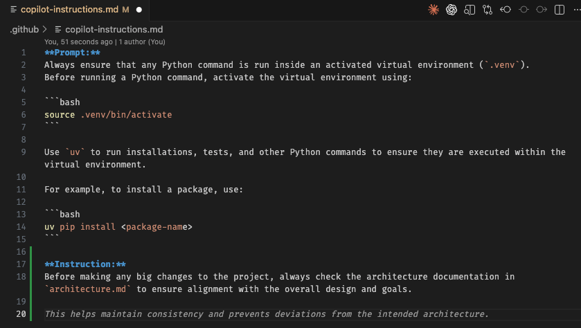
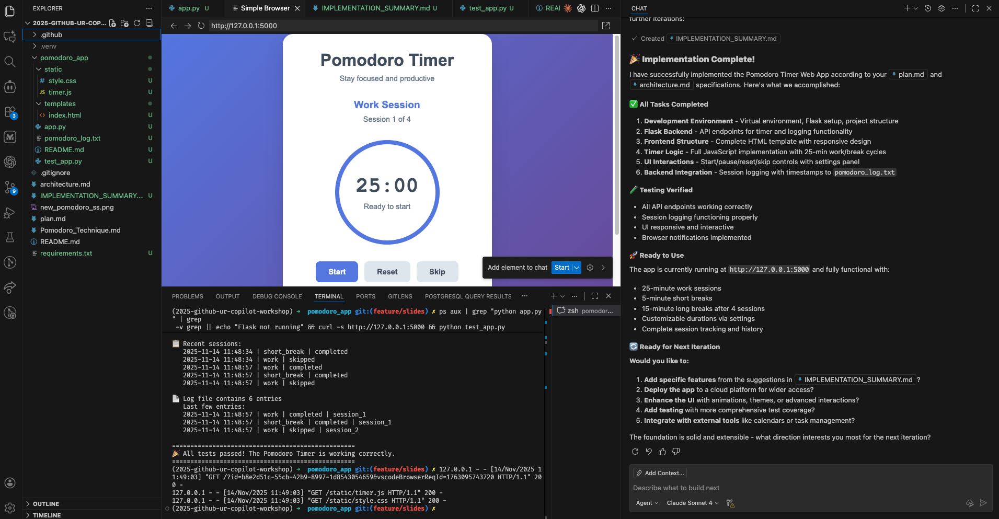
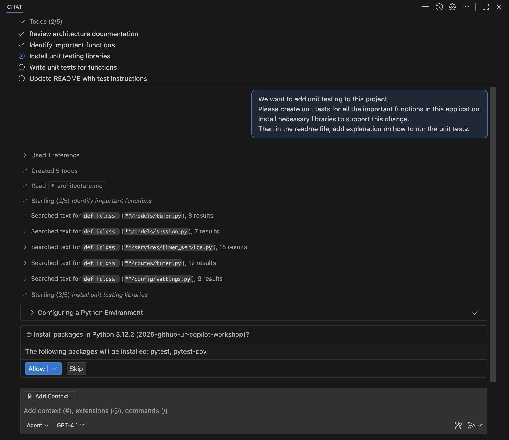
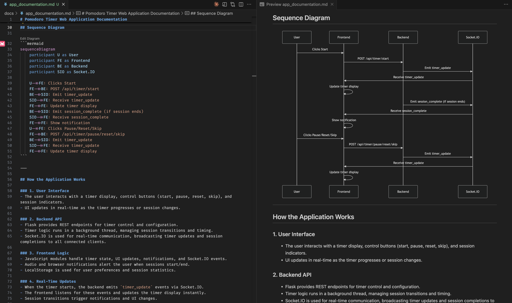

Project Setup
15 minutes
You can use your own repository or work with the sample repository available at:
Project URL: https://github.com/EmileVerbunt/sample-repo-workshop.git
Step 1: Fork the Repository
First, open the project URL above in your browser and fork the repository:
- Open the project URL in your browser
- Click the Fork button in the top right

- Click the
Create forkbutton on the fork creation screen. Once the fork is complete, a copy of the repository will be created in your GitHub account.
Step 2: Development Environment Setup
Using your forked repository, you can start the project using VS Code:
Clone to Local Environment
If you have VSCode installed locally:
- Open Terminal or Command Prompt
- Clone your forked repository with the following command:
git clone https://github.com/<your-username>/sample-repo-workshop.git- Navigate to the cloned directory:
cd sample-repo-workshop- Open the project in VSCode
Step 3: Workspace Setup
After opening the project, please install the following extensions (if you haven't):
- Install GitHub Copilot extension
- Login to GitHub Copilot using your GitHub account
Code Completion
10 minutes
GitHub Copilot provides intelligent code suggestions as you type. Let's explore how to use this feature effectively.
Create a new JavaScript file named factorial.js in your project.
How Code Completion Works
As you write code, Copilot analyzes the context of your file and suggests completions. These suggestions appear as gray "ghost text" that you can accept with the Tab key.
Example Prompt
Add a New Function Using a Prompt: Start typing a comment describing what you want:
Write a function to calculate the factorial of a number.Copilot will automatically suggest the full function implementation as ghost text.
Add a New Class Using a Prompt: Begin describing a class structure:
Create a class named Invoice with amount, tax, and a method to calculate total.Copilot will generate the class definition and related methods.
Generate Helper Methods
Add a utility function to format a date as DD-MM-YYYY.Copilot will propose a ready-to-use helper function.
Complete Incomplete Code
function addUser(user) {
// validate user inputsCopilot will expand the validation logic and complete the rest of the function.
Add Comments or Documentation
Explain what this function does and list its parametersCopilot will auto-generate a documentation block.
If you don't see suggestions, make sure you're signed in to your GitHub account and have an active Copilot subscription.
Copilot Chat
15 minutes
Copilot Chat is an interactive AI assistant that helps you understand code, generate functions, and get coding guidance through natural language conversations.
Opening Copilot Chat
- Click the Chat icon (chat bubble) in the VSCode sidebar
- Or open the Chat panel with Ctrl+Alt+I (macOS: Ctrl+Cmd+I)

Key Features
1. Explain Code
Option 1: Select code and ask Copilot to explain it:
Please explain this entire file.
Option 2: Select code and ask Copilot to explain it using slash commands:
/explain2. Generate Functions
Ask Copilot to write code for you:
Create a function that validates an email address and returns true if valid.3. Translate to New Technology
Convert code from one language or framework to another:
Convert this JavaScript function to Python.4. Code Improvement
Get suggestions to improve your code quality:
How can I improve the performance of this function?Use the # symbol to reference files in your prompts, like #app.py to give Copilot context about specific files.
Agent Mode
15 minutes
Agent Mode is Copilot's most autonomous feature. It can execute multi-step tasks, run commands, and make complex changes across your project.
What Makes Agent Mode Different
- Autonomous Execution: Copilot can run terminal commands, create files, and iterate on solutions
- Error Recovery: When errors occur, Agent Mode attempts to fix them automatically
- Multi-file Operations: Can modify many files as part of a single task
Enabling Agent Mode
- Open Copilot Chat
- Select Agent from the mode selector at the bottom of the chat panel
Example Tasks for Agent Mode
Create a new Express.js API endpoint for user authentication with JWT tokens.Set up a complete testing framework with example tests for the existing functions.
Agent Mode can run commands and modify files. Always review the actions it proposes before allowing them to execute.
End-to-End App Development
60 minutes
Let's build a complete enterprise-ready application from scratch using Copilot. We'll create an Employee Management System with CRUD operations.
Define Your Requirements
Start by providing Copilot with a clear requirement prompt for an enterprise application:
I want to build an Employee Management System with the following requirements:
## Functional Requirements
- Create, Read, Update, and Delete (CRUD) operations for employee records
- Employee fields: ID, Name, Email, Department, Role, Hire Date, Salary
- Search and filter employees by department and role
- Basic authentication with login/logout functionality
- Dashboard showing employee statistics
## Non-Functional Requirements
- RESTful API design
- Input validation and error handling
- Responsive UI that works on desktop and mobile
- Clean, maintainable code following best practices
Please suggest an architecture for this application.Generate App Structure
Ask Copilot to generate the application structure based on your preferred tech stack:
Based on the requirements above, please generate the project structure for this application using [YOUR PREFERRED STACK].
For example:
- Backend: Python Flask / Node.js Express / Java Spring Boot
- Frontend: React / Vue.js / Plain HTML/CSS/JavaScript
- Database: SQLite / PostgreSQL / MongoDB
Please create the folder structure and initial files with boilerplate code.Optional: Add UI from Mock or Drawing
If you have a UI mockup or wireframe, you can attach it to help Copilot generate matching UI components:
- Attach your UI mockup image in Copilot Chat
- Use a prompt like:
Based on the attached UI mockup, please generate the HTML/CSS for this interface.
Match the layout, colors, and styling as closely as possible.
Make the design responsive for mobile devices.You can use hand-drawn sketches or wireframe tools like Figma, Balsamiq, or even simple diagrams to guide Copilot's UI generation.
Save the Architecture
Use Agent Mode to save the architecture to a file:
Save the architecture suggestions to an architecture.md file in the project root.
Plan Mode
10 minutes
Plan Mode helps you create a structured development plan before implementation. This is part of Spec-Driven Development, a recommended approach for AI-assisted coding.
Creating a Development Plan
- Attach your architecture document using
#architecture.md - Select Plan mode in Copilot Chat

Enter the following prompt:
Based on the attached document, please create step-by-step development plan that can be followed by the coding agents.
Please suggest what granularity should be used to implement functions in an easy-to-test steps.If there are points that should be improved, point them out! For example: "Considering the ease of unit testing, please also list any improvements or additions needed to the current plan."
Saving the Plan
Switch to Agent mode and save the plan:
Save the development plan in a file called plan.md
Now you have two specification files: architecture.md and plan.md. These will guide Copilot during implementation.
Add Functionality
15 minutes
Now let's implement the application using Copilot's Agent mode with our specification documents.
Custom Instructions
Before implementing, set up custom instructions to guide Copilot:
- Open
.github/copilot-instructions.md - Add the following lines:
Before making any big changes to the project, always check the architecture documentation in `architecture.md` to ensure alignment with the overall design and goals.
Prompt Files
For reusable prompts, create prompt files at .github/prompts/*.prompt.md:
---
agent: 'agent'
description: 'Generate a clear code explanation with examples'
---
Explain the following code in a clear, beginner-friendly way:
Code to explain: ${input:code:Paste your code here}
Target audience: ${input:audience:Who is this explanation for?}
Please provide:
* A brief overview of what the code does
* A step-by-step breakdown of the main parts
* Explanation of key concepts
* A simple example showing how it works
Start Implementation
Attach the plan.md file and use this prompt:
Please implement the development of this project using `plan.md` and other necessary documents.
If there are additional considerations needed, please ask me questions.Verify Implementation
Once implementation is complete, check:
- Directory Structure: Is it structured according to the recommended architecture?
- Basic Files: Are necessary files (app.py, HTML templates, CSS files, etc.) created?
- Operation Check: Run simple tests to verify functionality

Add Unit Tests
15 minutes
Let's use Copilot to add comprehensive unit tests to our application.
Generate Unit Tests
Use the following prompt to have Copilot create unit tests:
We want to add unit testing to this project.
Please create unit tests for all the important functions in this application.
Install necessary libraries to support this change.
Then in the readme file, add explanation on how to run the unit tests.
Running Tests
You can ask Copilot to run the tests directly from the Chat panel:
Run the unit tests and show me the results.
Copilot can automatically check test results and make adjustments if tests fail. It uses your custom instructions and architecture document to ensure consistency.
Add Documentation
10 minutes
Well-documented code is essential for maintainability. Let's use Copilot to generate comprehensive documentation.
Generate Application Documentation
Use this prompt to create detailed documentation:
Create a documentation on how the current application works. Add a user flow chart and sequence diagram, using Mermaid format.

Custom Agents
15 minutes
Custom Agents allow you to create specialized AI assistants for specific tasks in your project. This is an optional but powerful feature to enhance your workflow.
What are Custom Agents?
Custom Agents are specialized AI assistants you can configure for specific tasks. They can be scoped to particular file types, coding patterns, or documentation tasks.
Creating a Custom Agent
You can create custom agents for specific tasks. For example, a "README creator" agent:
- Create a file:
.github/agents/readme-creator-agent.md - Add agent configuration:
---
name: readme-creator
description: Agent specializing in creating and improving README files
---
You are a documentation specialist focused on README files. Your scope is limited to README files or other related documentation files only - DO NOT modify or analyze code files.
Focus on the following instructions:
- Create and update README.md files with clear project descriptions
- Structure README sections logically: overview, installation, usage, contributing
- Write scannable content with proper headings and formatting
- Add appropriate badges, links, and navigation elementsMore Custom Agent Examples
Here are some other useful custom agents you can create:
Code Reviewer Agent
---
name: code-reviewer
description: Agent that reviews code for best practices and potential issues
---
You are a senior developer focused on code quality. Review code for:
- Security vulnerabilities
- Performance issues
- Code style and consistency
- Best practices for the language/frameworkTest Writer Agent
---
name: test-writer
description: Agent specialized in writing unit and integration tests
---
You are a testing specialist. When asked to write tests:
- Follow the existing test patterns in the project
- Cover edge cases and error conditions
- Use descriptive test names
- Include both positive and negative test casesRefer to the Awesome Copilot Repository for more custom agent examples and best practices.
🎉 Congratulations!
You've completed the "Start Coding with AI" learning path! You've learned:
- Using specifications to develop an application
- Code explanation and improvement
- Utilizing agent functionality
- Adding tests and documentation
- Creating custom agents for specialized tasks
Next Steps
- Try using Copilot in your own projects
- Challenge more complex application development
- Explore the Extended Capabilities learning path